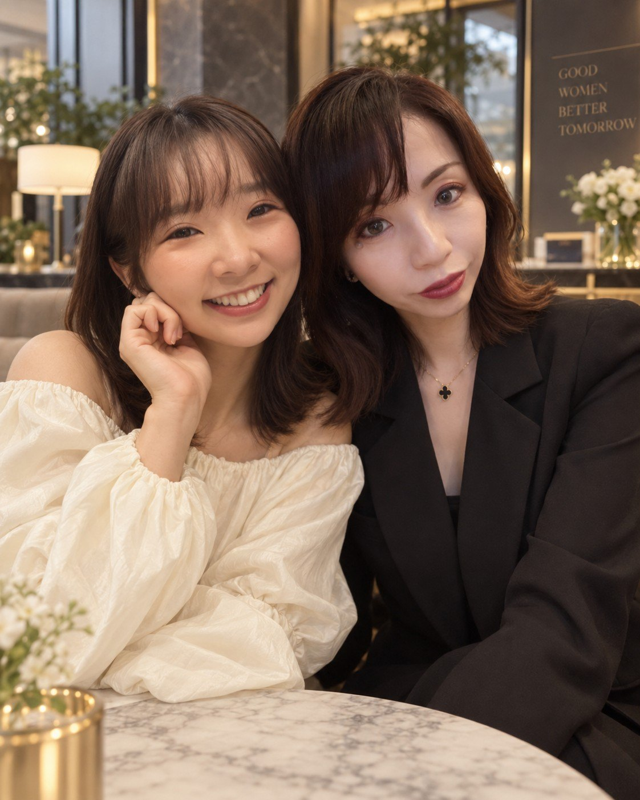
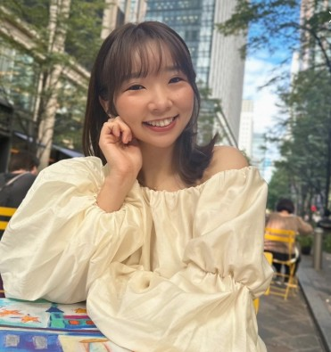

BUSINESS
事業を育てる。
集客、営業、商品、価格、経営、ブランディング。
「女性だから」ではなく、一人の経営者として事業を強くする。
ともに、より清らかで、より遠くへ。
FOR HER NEXT.
一人で頑張る経営から、
学び、つながり、互いの力を掛け合わせる経営へ。
SEIRAIは、AIを武器に事業を育てたい女性起業家・女性経営者のための実践型ビジネスコミュニティです。

01 OUR VISION
年齢でも、会社の規模でもなく、
「次へ進みたい」という意思から始まる場所。
起業した。
自分の力で仕事をつくった。
少しずつお客様も増えてきた。
でも、事業が大きくなるほど、
「これからどう伸ばそう？」 「このまま一人でやり続けるの？」 「AIって、自分の事業にどう使うの？」
そんな新しい悩みも増えていきます。
そして経営者になると、意外と、
本音で事業の相談をできる相手が少ない。
SEIRAIは、そんな女性たちが、
学び、相談し、刺激し合い、協業し、
ともに次へ進む場所です。
02 PROBLEM
SEIRAIは、
「交流するだけ」のコミュニティでは
ありません。
03 WHAT IS SEIRAI
SEIRAIには、3つの軸があります。
BUSINESS
集客、営業、商品、価格、経営、ブランディング。
「女性だから」ではなく、一人の経営者として事業を強くする。
AI
AIツールを覚えることが目的ではありません。
「自分の事業のどこにAIを使えばいいか」を考え、集客、営業、商品開発、業務効率化、新規事業などへ実装していきます。
COMMUNITY
相談する。紹介する。一緒に事業をつくる。時には仕事をお願いする。
SEIRAIでは、「知り合いを増やす」より、「一緒に仕事ができる関係をつくる」ことを大切にします。
04 BRAND STORY
SEI
清。清流。
凛とした透明感。
AI
Artificial Intelligence.
新しい力。
RAI
来。
これから訪れる未来。
清流の地から、
AIという新しい力を味方につけ、
一人ひとりが自分らしく、凛と未来へ進んでいく。
そんな想いから、SEIRAI と名付けました。
ともに、より清らかで、より遠くへ。
A CLEARER TOMORROW, TOGETHER.
05 WHAT YOU CAN DO
学ぶ
定期的に、女性起業家が次へ進むためのテーマを取り上げます。
単発で「勉強になった」で終わる内容ではなく、明日から自分の事業で使えることを基準にします。
つながる
女性経営者同士の交流・対話。ただし、単なる名刺交換会にはしません。
「今何をしているか」だけではなく、「今、何に困っているのか」「何を一緒にできるのか」まで共有します。
仕事を生み出す
メンバー間で実際に仕事が生まれることを後押しします。
AIの変化を追い続ける
AIは毎月のように変わります。だからSEIRAIでは、「一度勉強して終わり」にしません。
新しいAI、新しい活用法、新しいビジネス事例を継続的に共有します。
つながるだけではなく、
一緒に価値をつくる。
FOR THOSE WHO GO FURTHER
06 3 MONTHS INTENSIVE PROGRAM
学ぶだけで終わらない。
3か月で、自分の事業にAIを実装する。
SEIRAIメンバーの中で、「AIを本格的に事業へ取り入れたい」「売上や集客をもう一段伸ばしたい」「自社の事業を一度しっかり見直したい」という方のための集中プログラムです。
MONTH 01
事業を見直す
MONTH 02
売れる仕組みをつくる
MONTH 03
経営を仕組みにする
3か月で目指す成果
「AIを勉強しました」ではなく、
「AIで事業が変わりました」へ。
07 TWO FOUNDERS
その2人が出会って、SEIRAIが生まれました。
株式会社SysMix 代表取締役
SysMixは、「テクノロジー × クリエイティブ × 女性の力で、日本のITをアップデートする」を掲げています。
20年間ITの現場に立つ中で青木が感じてきたのは、テクノロジーは効率化だけのためにあるのではない、ということ。
システムやAIを使うことで、働く人がもっと自由になれる。企業がもっと成長できる。そして女性がライフステージに左右されず、自分の能力を発揮できる社会をつくれる。
SysMixは、そうした「人に寄り添うIT」を目指しています。
MESSAGE
AIを覚えることがゴールではありません。
AIによって、女性経営者がもっと自由に挑戦できる。もっと事業に集中できる。今まで一人ではできなかったことができる。
SEIRAIを、そんな可能性が生まれる場所にしたいと思っています。
※このメッセージはSEIRAI用に新しく編集したコピーで、SysMixサイトの文章をそのまま転載するものではありません。

ブリューエン株式会社 代表取締役CEO
ブリューエンが目指しているのは、性別、地域、国籍、ライフステージといった属性によって、人の可能性が制限されない社会。
田中自身も、結婚や転勤によるキャリアの変化を経験し、その後フリーランス、役員秘書、経営企画、海外事業開発、経営者というキャリアを歩んできました。
だからこそ、「女性だから」「地方だから」「家庭があるから」という理由で、本来持っている能力や選択肢を諦めなくていい社会をつくることを目指しています。
MESSAGE
人生や事業には、何度も転機があります。
でも、その変化が可能性を狭めるものではなく、新しい選択肢を増やすきっかけになってほしい。
SEIRAIで出会う人や情報、仕事が、誰かの「次の選択肢」になる。そんな循環をつくっていきたいと思っています。
※このメッセージはブリューエンの理念をSEIRAI向けに再編集したコピーです。
08 TECHNOLOGY × CHOICE
MAYUMI AOKI
テクノロジーによって、
人の可能性を広げる。
YUKO TANAKA
誰もが、自分の未来を
自分で選べる社会をつくる。
違う道を歩いてきた二人ですが、目指している場所はとても似ています。
女性が「次の選択肢」を
自分でつくれる場所をつくる。
09 FOR WHOM
年齢でも、会社の規模でもなく、
「次へ進みたい」という意思を大切にします。
10 WHAT HAPPENS HERE
LEARN
新しいことを学ぶ。
CHANGE
自分の事業を変える。
CONNECT
仲間とつながる。
COLLABORATE
一緒に仕事をする。
CHALLENGE
新しいことに挑戦する。
GROW
事業も、自分も成長する。
11 COMMUNITY MEMBERSHIP
SEIRAI COMMUNITY
月額 5,500円（税込）
※価格は予定です。募集開始時に確定いたします。
FOUNDING MEMBERS
第0期は初年度特別価格でご案内します。
ただ「安いから入る」ではなく、
最初の仲間として、SEIRAIの文化を一緒につくる人を募集します。
12 COMPARISON
| SEIRAI Community | AI Business Accelerator | |
|---|---|---|
| 目的 | 継続的な学び・交流・協業 | 3か月で事業を集中的に変える |
| 期間 | 継続 | 3か月 |
| セミナー | ○ | ◎ |
| AI最新情報 | ○ | ◎ |
| コミュニティ | ◎ | ◎ |
| 個別伴走 | △ | ◎ |
| 実践課題 | ○ | ◎ |
| 事業設計 | △ | ◎ |
| 料金 | 月額 5,500円（想定） | 200,000円 |
13 MESSAGE
地方だから。
家庭があるから。
一人だから。
ITが得意じゃないから。
そんな理由で、可能性を小さくする必要はない。
AIという新しい力。
これまで培ってきた経験。
そして、ともに挑戦できる仲間。
それらを掛け合わせれば、
一人では見えなかった景色まで行けるかもしれない。
SEIRAIは、女性が自分の意思で次の未来を選び、 その未来を事業として形にしていく場所です。
ともに、より清らかで、より遠くへ。